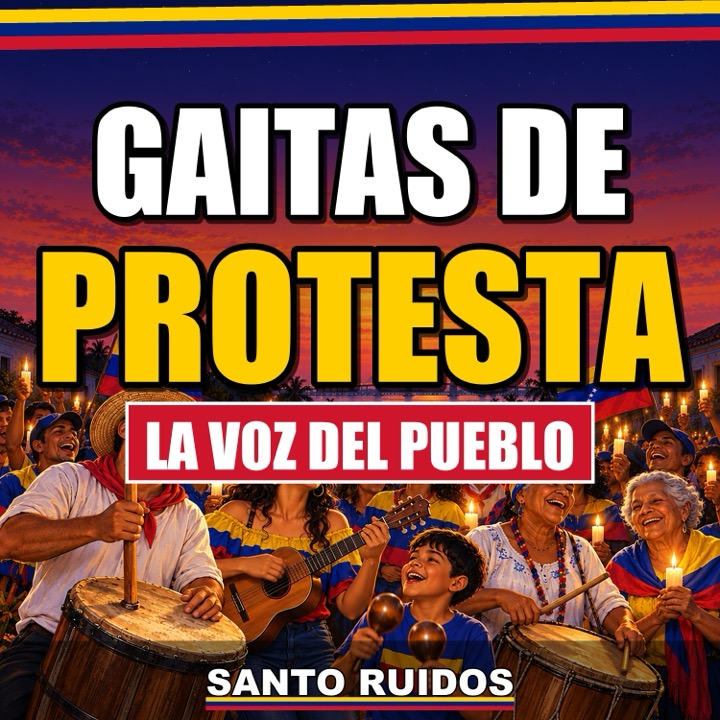

Kit de prensa
Santo Ruidos · La voz del pueblo hecha gaita
Todo lo que un medio, una radio, un podcast o una página de la diáspora necesita en un solo enlace: biografía, álbum, datos citables, imágenes para descargar, video para incrustar y contacto.
🙏 Suscríbete GRATIS a Santo Ruidos en YouTube: todas las gaitas COMPLETAS y GRATIS en YouTube.
Biografía
Santo Ruidos es la voz del pueblo hecha gaita: un proyecto de gaita zuliana de protesta sobre la Venezuela de hoy. Canta lo que el venezolano dice en la cola, en la casa sin luz y en la mesa sin hallaca, con cuatro, furro, charrasca, tambora y un coro de pueblo entero. Su sátira apunta a los poderosos, nunca contra el pueblo, y no pertenece a ningún partido. Todas sus gaitas se pueden escuchar completas y gratis en YouTube.
Transparencia: música hecha con IA bajo dirección humana.
El álbum
«Gaitas de Protesta: La Voz del Pueblo»
22 gaitas, disponibles en las principales plataformas desde el 16 de octubre de 2026.
Escanea o abre el álbum en Apple Music
Próximos sencillos
- «Pasaporte Vencido»: 30 de octubre de 2026.
- «Mansas Palomas»: 13 de noviembre de 2026.
Fechas de lanzamiento programadas con la distribuidora; pueden variar si la plataforma ajusta su calendario.
Datos que puedes citar
- Más de 23.000 seguidores en Instagram (@santo_ruidos): 23,8 mil según el perfil público, 19 de octubre de 2026.
- 119.164 vistas en Facebook según las estadísticas de la página, lectura del 11 de octubre de 2026.
- 162.976 vistas y 14.251 veces compartido: el Reel «Repuestos pa'l Palacio», sin impulso publicitario; cifras de Instagram al 7 de octubre de 2026.
- 73,4 mil vistas y 3,4 mil horas de reproducción en YouTube en 28 días, según YouTube Studio, 18 de octubre de 2026.
Cada cifra lleva su fecha de lectura; si la citas, cita también la fecha.
Frases para citar
Somos uno de ustedes: cantamos lo que se dice en la cola, en la casa sin luz y en la mesa sin hallaca.
Nuestra sátira apunta hacia arriba, a los poderosos; nunca contra el pueblo.
Para quien está lejos de casa, la gaita es la manera de pasar diciembre en Venezuela.
Imágenes para descargar
Portada del álbum e ilustraciones oficiales, listas para tu nota. Úsalas citando la fuente: Santo Ruidos.

Descargar JPG (3000 × 3000 px)

Descargar JPG (1080 × 1920 px)

Descargar JPG (1080 × 1920 px)

Descargar JPG (1080 × 1920 px)

Video para incrustar
Gaitas Venezolanas 2026: Las 22 Gaitas de Protesta Completas (Mix con Letra)
Copia y pega para incrustar:
<iframe width="560" height="315" src="https://www.youtube-nocookie.com/embed/vu6YitI4kPA" title="Gaitas Venezolanas 2026: Las 22 Gaitas de Protesta Completas (Mix con Letra) | Santo Ruidos" frameborder="0" allow="accelerometer; autoplay; clipboard-write; encrypted-media; gyroscope; picture-in-picture; web-share" referrerpolicy="strict-origin-when-cross-origin" allowfullscreen></iframe>Contacto y enlaces
Prensa, radio y podcasts: santoruidos@gmail.com
Cómo citar
Santo Ruidos (2026). Gaitas de Protesta: La Voz del Pueblo [álbum, 22 gaitas]. Lanzado el 16 de octubre de 2026. Kit de prensa: https://santoruidos.github.io/prensa/
Música hecha con IA bajo dirección humana.